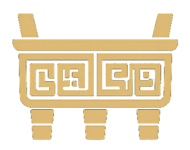
Cultural resources
Jingchu’s colours, motifs
and visual language.
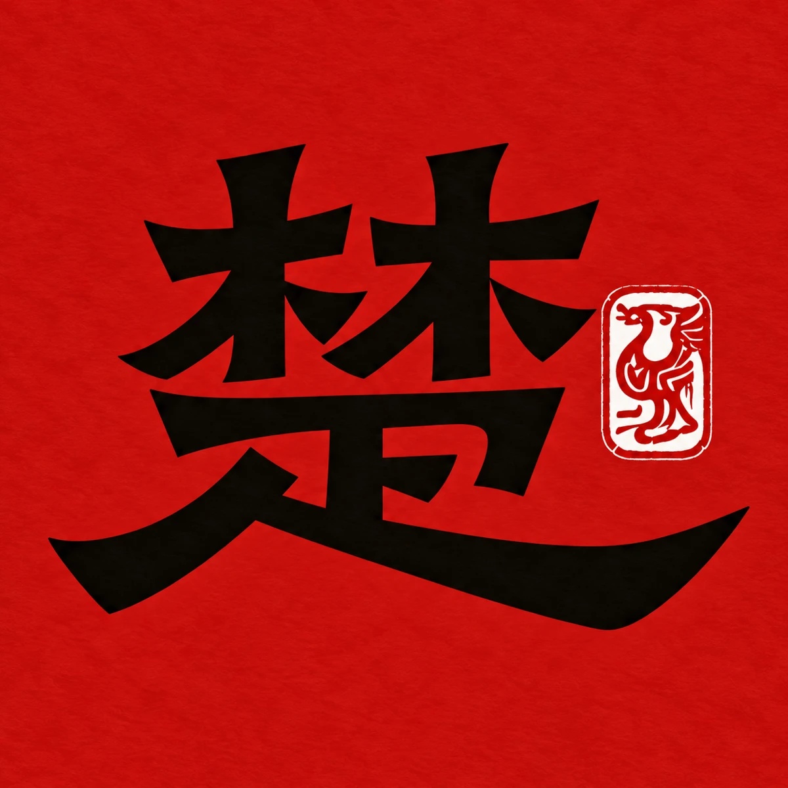
Jingchu in ColourPROJECT REPORTCulture · colour · creation
A cultural colour and
visual creativity platform.
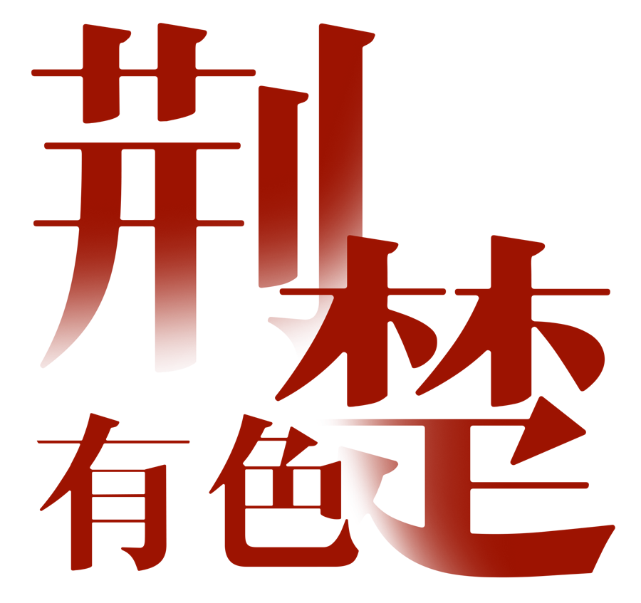
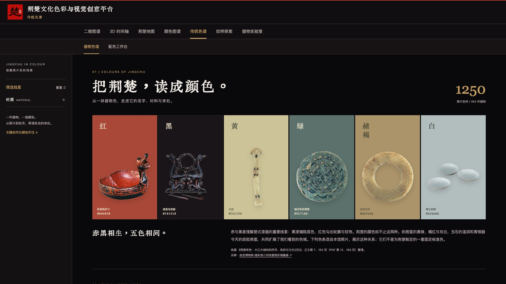
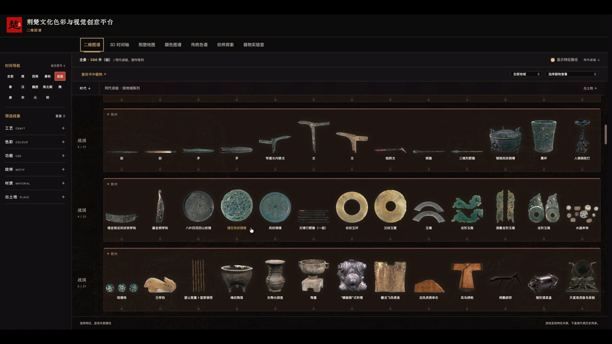
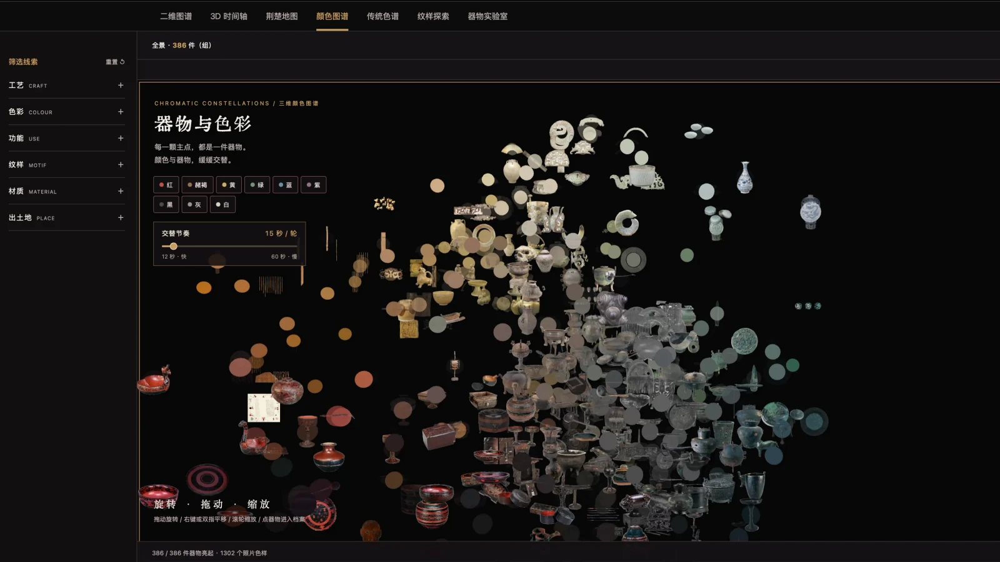
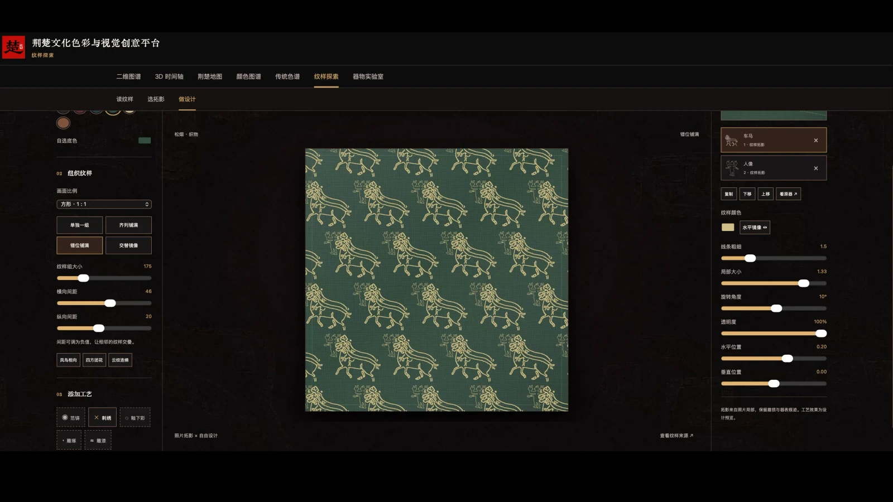
Our goal
The missing link was a shared database of visual elements.

Jingchu’s colours, motifs
and visual language.
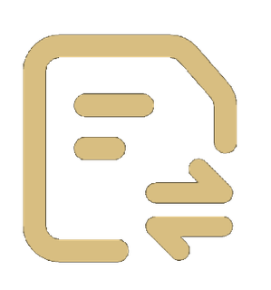
A connected database
of visual elements.
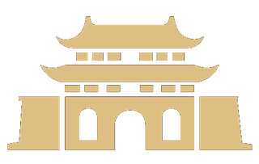
Make those elements usable
in cultural communication.
Extract colours. Connect motifs. Support new design.
The platform structure
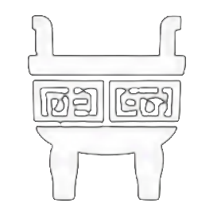
Colours · motifs · objects · stories · places
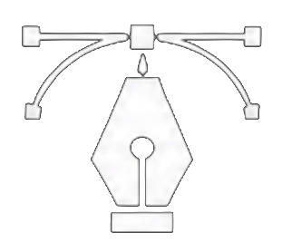
Palettes · graphics · type · layouts
Branding · tourism · exhibitions · public communication
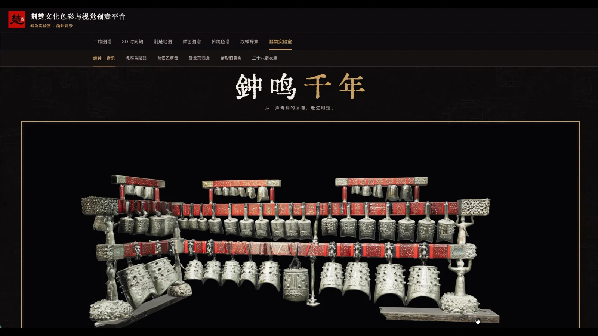
The database
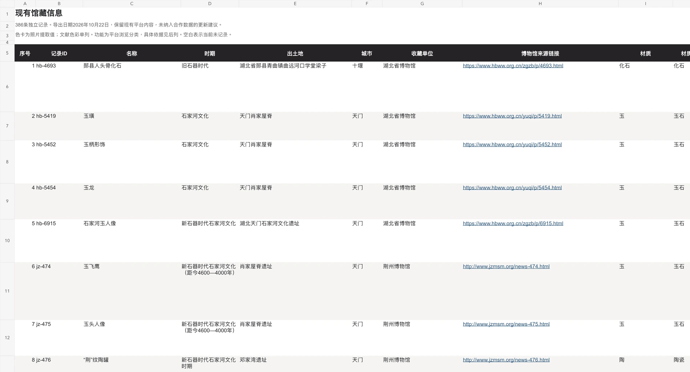
My contribution
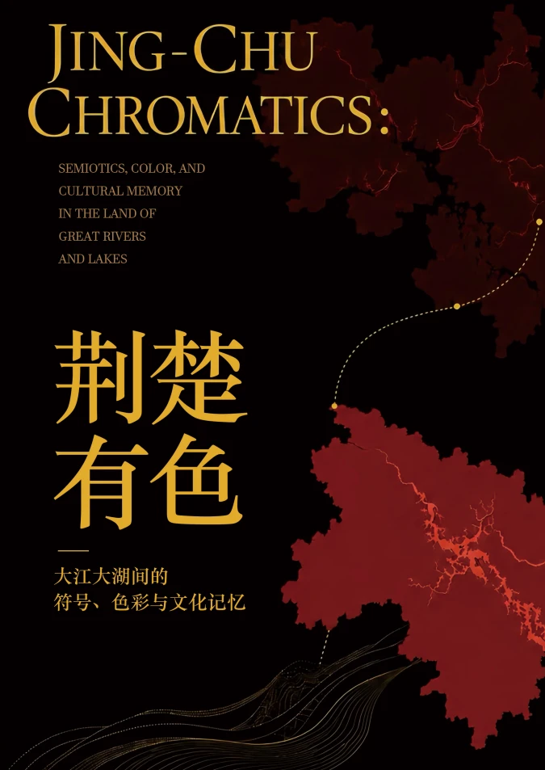
Wrote the book and shared the research, information and ideas that informed the platform.
I designed and built the website, turning the research into a connected collection and a set of creative tools. I developed the object atlas, timeline, map, colour exploration, pattern workshop and interactive exhibits, then refined how people move between them.
Outcomes & next steps
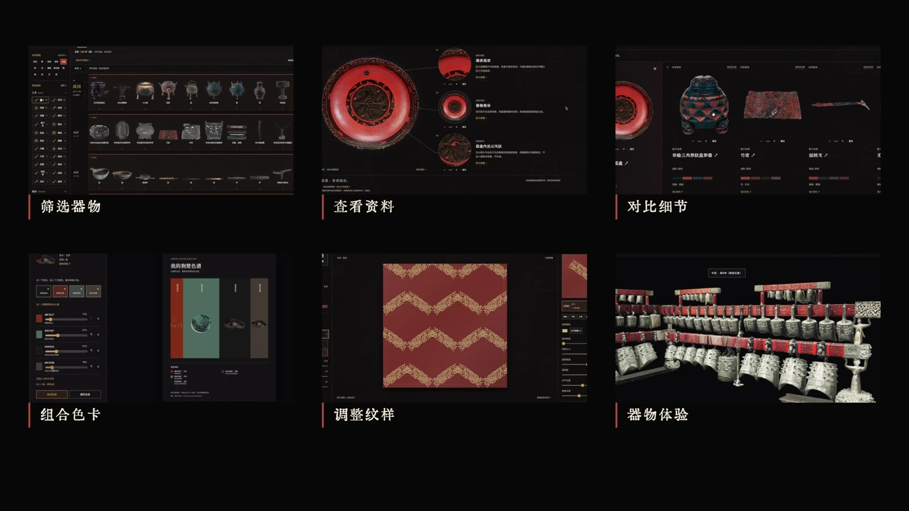
A published platform
Funding for traditional culture outreach
An AI agent to explain the collection
Explore cooperation with Hubei Provincial Museum
Potential further funding
My conclusion
I started with too much.
Simplifying the experience taught me the most.
Build a clear journey first.
Then decide what to add.
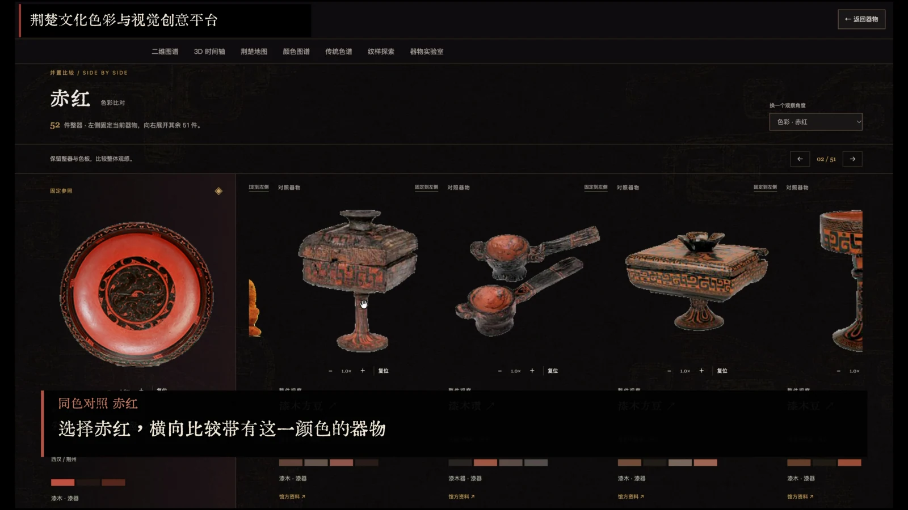